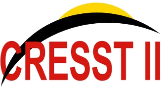
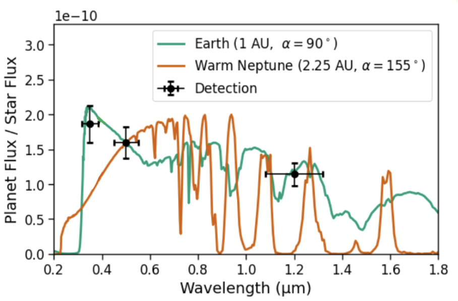
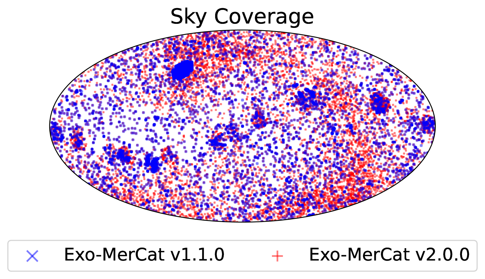
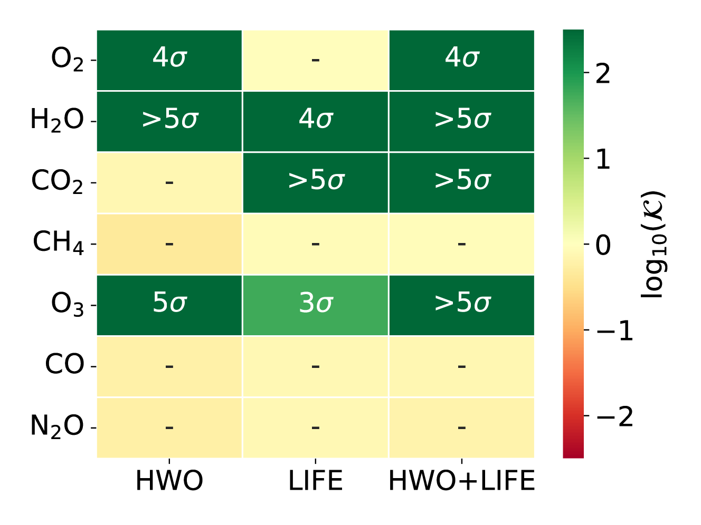
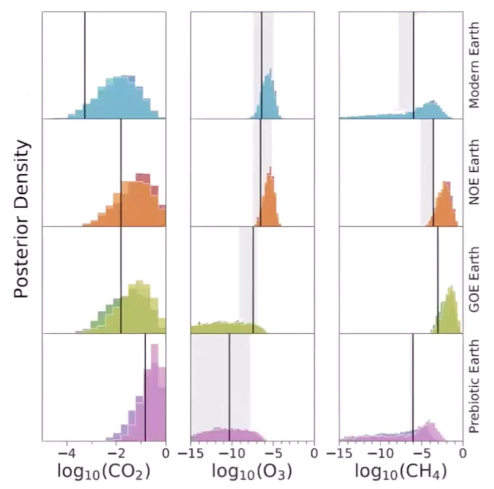
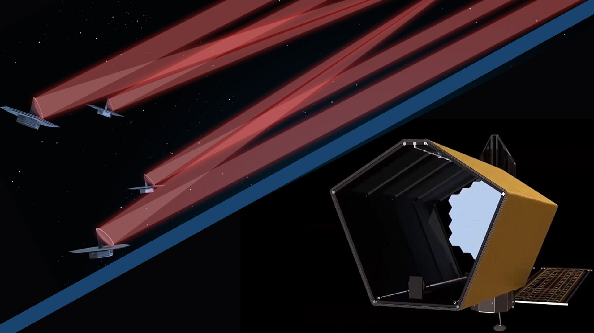
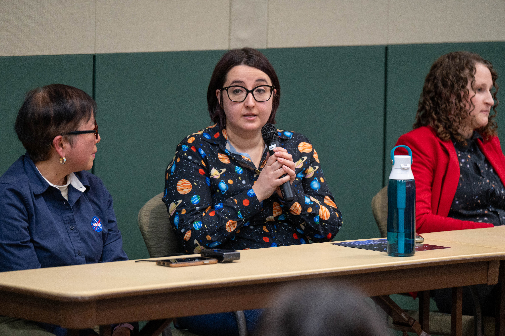
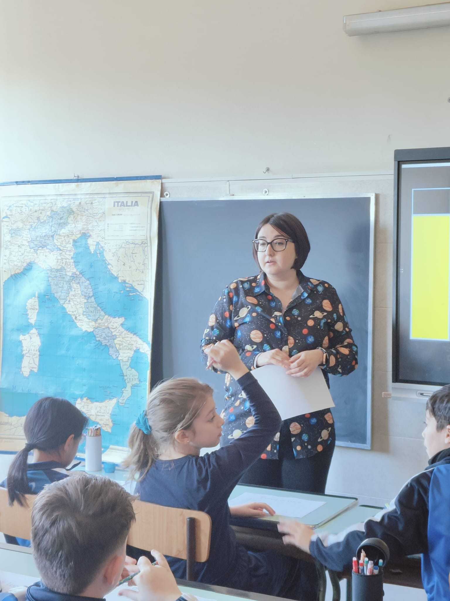

Eleonora Alei, Ph.D.
Assistant Research Scientist @ CRESST II, UMBC / NASA Goddard Space Flight Center
I specialize in the characterization of terrestrial, habitable exoplanets and their atmospheric modeling. My research focuses on defining science requirements for future space missions aimed at detecting habitable worlds and potential biosignatures. I model both atmospheres and expected noise to help scientists and technologies make reasonable architecture trades.
Key Roles and Affiliations:
- Habitable Worlds Observatory (HWO): Coronagraph Exposure Time Calculator Lead Developer
- LIFE (Large Interferometer For Exoplanets) Mission: Science Community Lead
- CRESST II (UMBC): Assistant Research Scientist at NASA Goddard
- Astronomy & Computing: Member of the Early Career Board of Editors
Experience
-

Sep 2026 - PresentAssistant Research ScientistCRESST II, University of Maryland, Baltimore County (UMBC) — NASA Goddard Space Flight CenterPrimary liaison for the Habitable Worlds Observatory (HWO) Exposure Time Calculators between NASA Goddard and STScI, translating science requirements into technical specifications. Maintaining, validating, and enhancing the coronagraph ETC (pyEDITH), developing frameworks for integrated science-return analysis, managing HWO software repositories under FAIR principles, and providing community support and training. -
2023 - 2026NASA Postdoctoral Fellow (NPP)NASA Goddard Space Flight CenterLeading the development of the coronagraph exposure time calculator (ETC) with 2 publications in preparation. Leading the LIFE Science Community with monthly meetings and community papers. Collaborating with international scientists on atmospheric retrievals and radiative transfer intermodel comparisons. Maintaining exoplanet catalog used as source by the PLATO and LIFE teams for their input catalogs.
-
2020 - 2023Postdoctoral ResearcherETH ZurichLed the atmospheric modeling team for the LIFE mission concept, resulting in 5 high-impact publications by the core team. Developed the official LIFE atmospheric retrieval routine. Supervised 8 students and performed teaching duties for 6 semesters.
-
2016 - 2019Doctoral ResearcherUniversità degli Studi di Padova - INAF Osservatorio di PadovaDeveloped software for: handling exoplanet catalog data; modeling radiative-convective transfer and ozone photochemistry for terrestrial planets. The results of the models then recreated by biologists in the laboratory, to study the behavior of photosynthetic bacteria under exotic conditions.
Research Highlights

Alei et al. (2026)
I have developed a multi-bandpass photometric strategy for the Habitable Worlds Observatory that improves our ability to distinguish Earth-like planets from Neptune-like planets during the discovery phase. This approach enables faster and more reliable identification of potentially habitable terrestrial planets, optimizing the scientific return of future direct-imaging missions.
Read Paper
Alei et al. (2025)
I have developed an enhanced, open-source tool that efficiently merges exoplanet data from multiple catalogs, including newly added sources like TESS and K2. This offers researchers a more comprehensive, accurate, and user-friendly resource for exoplanet studies, thus advancing our ability to analyze and understand the diverse population of known exoplanets.
Read Paper
Alei et al. (2024)
Combining observations from future space missions like HWO and LIFE, operating in complementary spectral ranges (UV/VIS/NIR and MIR) significantly enhances our ability to characterize Earth-like exoplanets and detect potential biosignatures, paving the way for groundbreaking discoveries in the search for extraterrestrial life.
Read Paper
Alei et al. (2022)
By performing Bayesian retrievals on simulated mid-infrared spectra, I demonstrated that LIFE's baseline requirements are sufficient to identify key spectral features like CO2, H2O, O3, and CH4, effectively allowing us to distinguish between inhabited and lifeless scenarios for Earth-like planets.
Read Paper
Exoplanet Atmospheric Characterization with Future Space Missions
I focus on exploring the potential of future space missions, such as LIFE (Large Interferometer For Exoplanets) and HWO (Habitable Worlds Observatory), for characterizing terrestrial exoplanets. This work involves developing atmospheric retrieval techniques, assessing the detectability of biosignatures, and defining science requirements for next-generation observatories aimed at finding life in the universe.
View Related Papers
Noise Modeling and Retrieval Techniques
I develop and apply advanced models for simulating observations and studying exoplanet atmospheres, with a focus on terrestrial planets. This includes work on noise simulators, radiative transfer models, and atmospheric retrieval frameworks.
View Related Papers
Exoplanet Data Management and Catalog Development
I create tools and methodologies for managing and analyzing exoplanet data. This includes the development of Exo-MerCat, a merged exoplanet catalog with Virtual Observatory connections. My work in this area aims to improve the accessibility and interoperability of exoplanet data, facilitating more efficient research and collaboration within the exoplanet science community.
View Related PapersScience Communication
Talks & Videos
Public Engagement

Out of this World - Girls In Space
Robinson Nature Center, MD, USA, 2024 - 2026

Lectures for 1st-5th Grade Students
Scuola Amore Misericordioso, Rome, Italy, 2025
Get in Touch
Feel free to reach out for collaborations, research inquiries, or any questions about my work.
- eleonora.alei@nasa.gov
- NASA Goddard Space Flight Center, 8800 Greenbelt Rd, Greenbelt, MD 20771, USA
- Office Hours: Monday to Friday, 9:00 AM - 5:00 PM (EST)
Location
As an Assistant Research Scientist with CRESST II (UMBC), I'm based at NASA Goddard Space Flight Center, where I conduct my research on exoplanet characterization and atmospheric modeling.